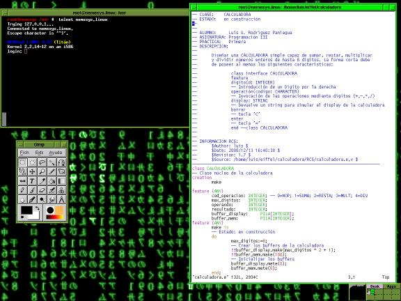
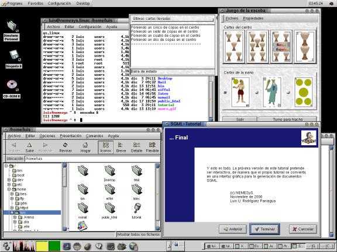
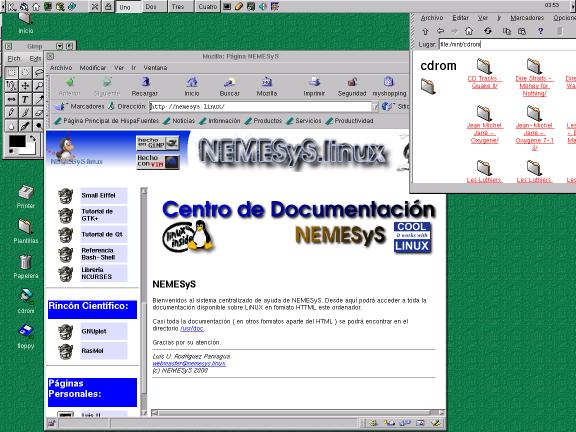

Sobre el Autor
Lo cierto es que no hay mucho que decir. Estas son algunas capturas de su equipo doméstico de LiNUX:
Mi entorno favorito: AnotherLevel (fvwm2 )

El más atractivo visualmente... Pero lento hasta la desesperación.

El más robusto... Pero el más windowizado
